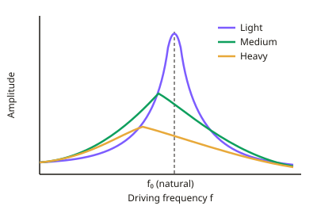

A-level Physics Year 13 · Topic 10
Oscillations: damping and resonance
Oscillations: damping and resonance looks at what happens to real oscillating systems, which lose energy and can be driven by outside forces.
We will compare free and forced oscillations, explain resonance and the effect of damping, and see examples from radios and musical instruments to bridges and buildings.
We finish with the practical investigating simple harmonic motion with masses on springs and pendulums.
- 4 subtopics
- 198 questions
- Free: 10.1 notes and 10 questions
In this topic
- 10.1Free and forced oscillations and resonanceFree below · 64 questions
- 10.2Damping: light, critical and heavy dampingOpen in Full Marks · 45 questions
- 10.3Resonance in everyday applications and its effectsOpen in Full Marks · 25 questions
- 10.4Practical: investigating simple harmonic motion (mass–spring and pendulum)Open in Full Marks · 64 questions
10.1 · Free notes
Free and forced oscillations and resonance

Key points
- A free oscillation happens when a system is displaced and released, then oscillates with no external driving force. It oscillates at its natural frequency f₀, and its amplitude stays constant only if no energy is lost.
- For a mass on a spring, f₀ = (1/2π)√(k/m), with k in N m⁻¹, m in kg and f in Hz. For a simple pendulum, f₀ = (1/2π)√(g/l).
- A forced oscillation happens when a periodic driving force is applied to the system. After initial transients die away, the system oscillates at the driving frequency, not its natural frequency.
- Resonance occurs when the driving frequency equals the natural frequency of the system. The amplitude is then a maximum, and energy is transferred from the driver to the system at the maximum rate.
- At resonance the rate of energy input from the driver equals the rate of energy dissipated by damping. This is why the amplitude levels off at a finite maximum.
- Phase: at low driving frequency the displacement is in phase with the driving force. At resonance the displacement lags the driver by π/2 (90°). Well above f₀ it is in antiphase (phase difference π).
- The amplitude–driving frequency graph (resonance curve) has a peak at f₀. The amplitude is small and roughly constant at low frequency and falls to very small values at high frequency.
- Light damping gives a tall, sharp peak close to f₀. Heavier damping gives a lower, broader peak that shifts slightly to a lower frequency.
- Practical: drive a mass–spring system or Barton's pendulums with a vibration generator or driver pendulum. Vary the driving frequency in steps, wait for steady state each time, and record the amplitude against frequency. Use a fiducial marker and a metre rule to reduce parallax error.
- Exam tip: always state that resonance needs driving frequency = natural frequency. Describe the effect on amplitude and say that damping limits the peak height.
In more detail
- Phase at resonance: below f₀ displacement is in phase with the driver; at f₀ it lags by π/2; well above f₀ it lags by π (antiphase).
- Barton's pendulums: a heavy driver pendulum sets several light pendulums swinging; the one with the same length (same natural frequency) swings with the largest amplitude.
- Worked natural frequency: m = 0.50 kg, k = 50 N m⁻¹ → f₀ = (1/2π)√(100) = 1.6 Hz.
- Energy at resonance: maximum energy transfer from driver to oscillator happens when the driving frequency equals the natural frequency.
Practice
Free and forced oscillations and resonance: 10 questions
Pick an answer to check it, or open the answer for the explanation.
1. A 0.25 kg mass hangs on a spring of stiffness 40 N m⁻¹ and is pulled down and released. What is its natural frequency of oscillation?
- 12.6 Hz
- 2.0 Hz
- 1.0 Hz
- 0.50 Hz
Show answer
B: 2.0 Hz. f = (1/2π)√(k/m) = (1/2π)√(40/0.25) = (1/2π)√160 = 2.0 Hz. The value 12.6 is the angular frequency in rad s⁻¹.
2. A simple pendulum of length 1.00 m is driven by a periodic force. At what driving frequency does it resonate? (g = 9.81 m s⁻²)
- 0.50 Hz
- 2.0 Hz
- 3.1 Hz
- 1.0 Hz
Show answer
A: 0.50 Hz. f₀ = (1/2π)√(g/l) = (1/2π)√9.81 = 0.50 Hz. 2.0 s is the period, and 3.1 is the angular frequency in rad s⁻¹.
3. A lightly damped system with natural frequency 5.0 Hz is driven at 3.0 Hz. Once transients have died away, at what frequency does it oscillate?
- 3.0 Hz
- 8.0 Hz
- 4.0 Hz
- 5.0 Hz
Show answer
A: 3.0 Hz. In steady state a forced oscillation takes the frequency of the driver, here 3.0 Hz, not the natural frequency.
4. At resonance, what is the phase relationship between the displacement of the driven system and the driving force?
- Displacement leads the force by π/2
- Displacement is in antiphase with the force
- Displacement is in phase with the force
- Displacement lags the force by π/2
Show answer
D: Displacement lags the force by π/2. At resonance the displacement lags the driving force by π/2 (90°), so the force is in phase with the velocity. This gives maximum energy transfer.
5. A system is driven at a frequency much greater than its natural frequency. How does its displacement compare with the driving force?
- In antiphase, a phase difference of π
- Lags it by π/2
- Leads it by π/2
- In phase with it
Show answer
A: In antiphase, a phase difference of π. The phase lag increases from 0 at low frequency, through π/2 at resonance, towards π (antiphase) well above f₀. The amplitude is also small there.
6. A vibrator drives a mass on a spring. Amplitudes: 4 Hz 1.2 cm; 6 Hz 2.5 cm; 8 Hz 7.9 cm; 10 Hz 3.1 cm; 12 Hz 1.0 cm. Best estimate of the natural frequency?
- About 10 Hz
- About 8 Hz
- About 6 Hz
- About 4 Hz
Show answer
B: About 8 Hz. The maximum amplitude is recorded at 8 Hz, so resonance occurs there. The natural frequency is about 8 Hz.
7. Which statement about energy transfer at resonance is correct?
- Kinetic and potential energies are both zero
- The driver transfers no net energy to the system
- The driver transfers energy to the system at the maximum rate
- The system loses no energy to its surroundings
Show answer
C: The driver transfers energy to the system at the maximum rate. At resonance the driver does work at the maximum rate. In steady state this equals the rate at which damping dissipates energy, so the amplitude stays constant.
8. The damping of a driven oscillator is increased. How does its amplitude–frequency graph change?
- Peak lower and broader, moving slightly to lower frequency
- Peak unchanged but moves to a higher frequency
- Peak lower and narrower
- Peak higher and narrower at the same frequency
Show answer
A: Peak lower and broader, moving slightly to lower frequency. More damping reduces the peak amplitude, flattens and broadens the curve, and shifts the peak slightly below f₀.
9. Which situation describes a free oscillation?
- A mass on a spring whose support is shaken by a motor
- A loudspeaker cone driven by an alternating current
- A child's swing pushed repeatedly at a fixed frequency
- A mass pulled aside once and released to oscillate
Show answer
D: A mass pulled aside once and released to oscillate. A free oscillation has no periodic external force after the initial displacement. The system oscillates at its natural frequency.
10. With a vibration generator, why wait several oscillations after changing the driving frequency before measuring the amplitude?
- So the driving force becomes constant in size
- So the damping falls to zero
- So the system's natural frequency reaches the new value
- So transients die away and steady-state amplitude is reached
Show answer
D: So transients die away and steady-state amplitude is reached. After a frequency change, transient motion at the natural frequency mixes with the forced motion. Waiting gives a steady amplitude at the driving frequency.
Keep going in Full Marks
Full Marks has 64 questions on Free and forced oscillations and resonance (54 more than here), set out in practice levels. You also get notes and 3D models for all 4 subtopics of Oscillations: damping and resonance, plus games, timed exams and past papers.